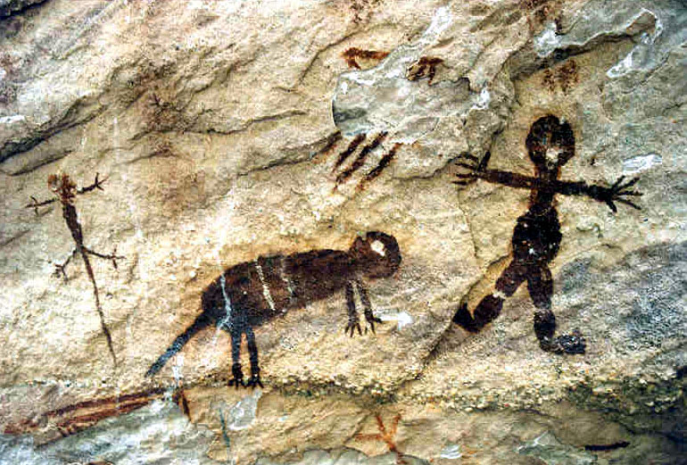
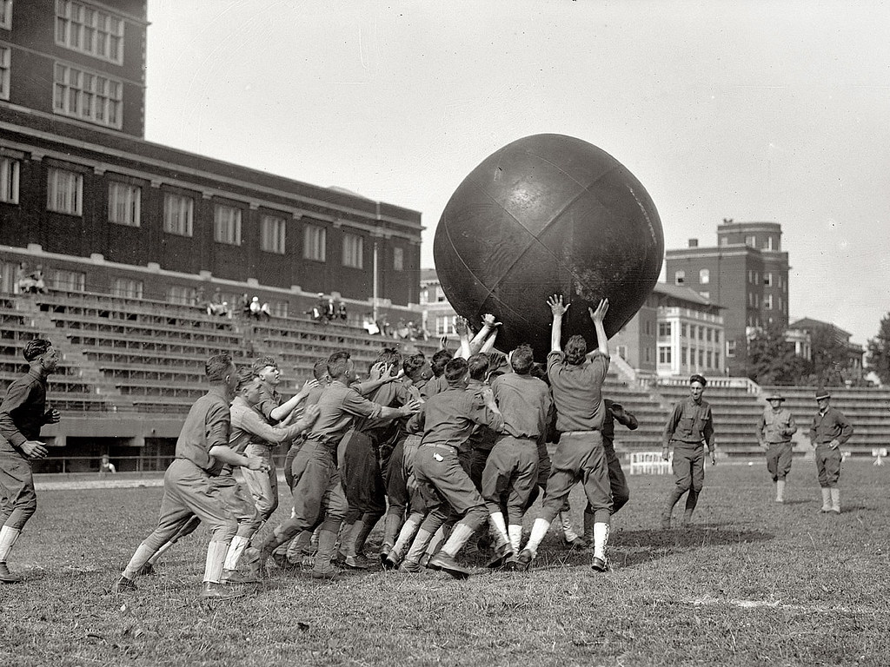
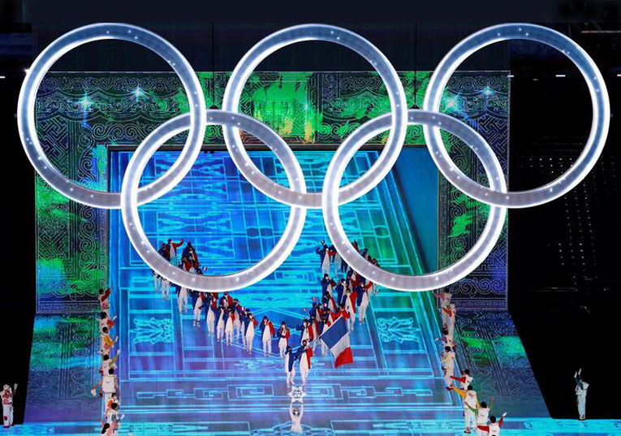

A origem do esporte é difícil de ser rastreada, pois muitos dos jogos e atividades físicas que agora consideramos esportes têm suas raízes em culturas antigas e em rituais religiosos. No entanto, sabe-se que os jogos olímpicos antigos, realizados na Grécia antiga, foram um dos primeiros eventos esportivos organizados. Os gregos antigos acreditavam que o esporte era essencial para o desenvolvimento físico e mental das pessoas, e os jogos olímpicos eram realizados a cada quatro anos para celebrar a força e a habilidade dos atletas.
Esportes
◆ Origem ◆
-
Pré-História
- 
-
Pré-história: atividades físicas primitivas, como correr, saltar e arremessar, são praticadas como parte da sobrevivência e da caça.
776 a.C.: Início dos jogos olímpicos antigos na Grécia, com eventos como corridas, luta livre e lançamento de disco.
393 d.C.: O imperador romano Teodósio I proíbe os jogos olímpicos antigos.
Idade Média: atividades físicas como caça e equitação são populares entre a nobreza europeia.
-
Século XX
- 
-
Início do século XX: A popularidade do esporte cresce rapidamente em todo o mundo, com a criação de muitas novas modalidades, como basquete, vôlei e futebol.
1960s e 1970s: O esporte começa a ser visto como uma forma de promover a igualdade e a justiça social, com o aumento da participação de atletas de diferentes raças e etnias e a criação de eventos esportivos para pessoas com deficiência.
Década de 1980: O doping e o uso de esteroides anabolizantes se tornam uma questão cada vez mais importante no esporte.
-
Atualidade
- 
-
Década de 2000: O esporte é cada vez mais utilizado como uma ferramenta de marketing e entretenimento, com grandes eventos esportivos, como a Copa do Mundo de futebol e as Olimpíadas, atraindo bilhões de espectadores em todo o mundo.
Atualidade: O esporte continua a evoluir e se adaptar, com a crescente utilização de tecnologia e a promoção de valores como a inclusão, a sustentabilidade e a saúde e bem-estar.
Página com informações muito importantes.
pop_it2
Um cara qualquer
Caramba!!! Essa página é extremamente bonita e precisa ser compartilhada, principalmente com amantes do esporte!
Linha do tempo muito clara e objetiva, parabéns!
juju77
Um cara qualquer